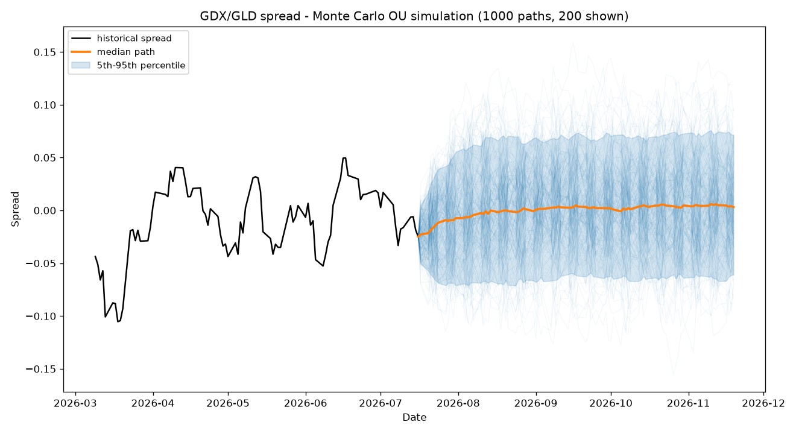

Every simulated trajectory of the GDX/GLD spread over the next 90 trading days, fit to an Ornstein-Uhlenbeck process. Median path bold, 5th–95th percentile band shaded, hover any path.
Per-path strategy P&L across the 1,000 trials, after transaction costs, slippage, and short-leg borrow. Percentile markers and probability of profit annotated.
The pair's log-price spread and rolling z-score with entry (±2σ), exit (±0.5σ), and stop (±3σ) bands shaded. Drag the range slider to zoom.
Daily mark-to-market equity for the backtested pair with a linked drawdown panel.
Static snapshot of the real-time intraday dashboard (the live version streams Yahoo websocket ticks and refreshes every 5 seconds while run_live_monitor.py is running locally).

py run_montecarlo.py GDX GLD; data via yfinance (delayed). Snapshots reflect the date they were generated.